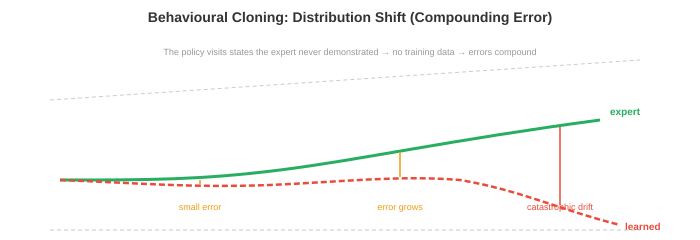
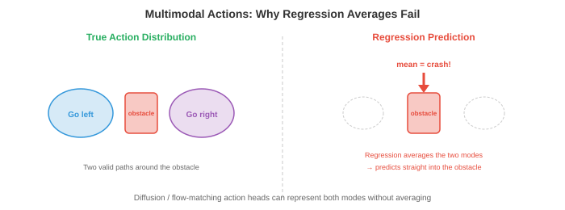

Ten sheets in, you have been reading about a field that borrowed your mathematics and renamed it. This sheet is different. Autonomous systems did not borrow mechanical engineering — it is mechanical engineering, with a perception front end bolted on. The Jacobian in a robotics paper is the Jacobian from your velocity analysis. The singularity is the toggle position of a four-bar. The manipulator equation is Euler–Lagrange. You are not learning a new subject here; you are learning a second vocabulary for one you already have.
Which creates the opposite hazard from every previous sheet. When almost everything transfers, the few things that do not become very easy to miss, and they are the dangerous ones. So this sheet spends its energy unevenly: it moves fast through the identities, and slows down hard at the three places where your intuition will quietly mislead you — what a projection destroys, what an unobservable state means, and what happens to a learned policy when it drifts off the trajectory it was taught on.
There is also a debt to pay. Sheet 10 twice told you that learned fusion has no \(H\), no \(R\), no innovation to monitor and no observability test — and twice said you would meet those properly here. §09 and §10 are that promise, and they end somewhere worth arriving at: the steady-state Kalman filter on a constant-velocity model has a damping ratio of exactly \(1/\sqrt{2}\), for every choice of noise, every sample rate, and every discretisation. It derives the number you were taught to choose by hand.
Read the verdict column carefully. In earlier sheets it mostly said analogy. Here it mostly says identical — and that is a literal claim, not encouragement. Where it says identical, the two things are the same mathematical object under two names, and anything you can prove about one holds for the other. The four rows at the bottom are the ones to dwell on.
| What you already know | What this chapter calls it | Verdict |
|---|---|---|
| Four-bar loop closure; chaining link transforms | Forward kinematics, the Denavit–Hartenberg product | Identical. 4×4 homogeneous matrices instead of vector polygons. See §11. |
| Velocity polygon, instantaneous centres | The manipulator Jacobian \(J(\mathbf{q})\) | Identical. The same linear map \(\dot{\mathbf{x}}=J\dot{\mathbf{q}}\), written as a matrix. See §12. |
| Dead centre / toggle position of a linkage | Kinematic singularity | Identical. \(\det J=0\); a direction of motion becomes unreachable. See §12. |
| Euler–Lagrange for a mechanism; Coriolis terms in a rotating frame | The manipulator equation \(M\ddot{\mathbf{q}}+C\dot{\mathbf{q}}+\mathbf{g}=\boldsymbol\tau\) | Identical, same derivation. \(M\) is the kinetic-energy form, so it is symmetric positive definite. See §13. |
| Spring–dashpot; \(\omega_n\), \(\zeta\), percentage overshoot | PID gains \(K_p\), \(K_d\) | Identical. \(K_p\) is a stiffness, \(K_d\) a damping coefficient. See §14. |
| Variance-weighted least squares on two instruments | The Kalman gain \(K=PH^{T}S^{-1}\) | Identical. Weight each source by inverse variance. See §09. |
| Observability rank test (control systems) | Whether a sensor suite can recover a state at all | Identical test, and it is the reason IMUs drift. See §09. |
| \(\zeta=0.707\): the maximally flat second-order response | Steady-state Kalman filter on a constant-velocity model | Derived, not chosen. The filter lands on \(1/\sqrt2\) by itself. See §10. |
| Centre of pressure inside the base — the tipping condition | Zero Moment Point inside the support polygon | Identical. And the centre of mass version is the static special case only. See §16. |
| Tolerance stack-up on an assembly | Extrinsic calibration error budget | Identical, with one twist: angular error does not shrink with distance. See §03. |
| Rigid-body mode of a free–free structure; mass-weighted centroid | Graph Laplacian consensus in a swarm | The same eigenstructure. Node degree plays the role of mass — which is why the source’s claim about the average is wrong. See §19. |
| Firing order and crank phasing in a multi-cylinder engine | Central pattern generator phase offsets; gaits | The same bookkeeping, different physics. Trot and bound are firing orders. See §16. |
| Contact and friction wrecking an FEA convergence run | The sim-to-real gap | The same root cause. Contact is non-smooth and its constitutive model is genuinely unknown. See §15. |
| A stereo pair, or any triangulation | Depth from disparity | Transfers, but the error does not. Range error grows as \(Z^2\), so 100 m is 100× worse than 10 m. See §05. |
| Reading a dimension off a drawing | Reading depth off a single photograph | Impossible in principle. Projection divides by \(Z\); no algorithm undoes that without a prior. See §02. |
| A linkage that keeps working when it is off its nominal path | A behaviour-cloned policy off its training distribution | No counterpart whatsoever. Small errors compound into states the policy has never seen. See §15. |
| Gain margin, phase margin, Routh–Hurwitz | Stability of a learned control policy | Nothing transfers. There is no margin to compute and no proof to run. See §14. |
If a row says identical, do not re-learn it — just learn the new name and move on. Your time is better spent on the four amber rows, none of which has anything to do with robotics hardware. Three are about what information a measurement contains, and one is about what a learned function does outside the data it was fitted on. Those are the genuinely new ideas in this chapter.
Every sensor on an autonomous vehicle measures one of three things: time, frequency, or irradiance. Everything else is inference. It is worth being concrete about the physics, because the physics sets limits that no amount of neural network fixes, and because two of the three are instruments you have already used.

Time of flight, and how brutal the timing is
LiDAR fires a pulse and times the return. Range follows from the one equation everyone writes down:
The factor of two is the round trip. What nobody writes down is what that equation costs. Invert it: \(\Delta t = 2d/c\), so one centimetre of range resolution requires
Sixty-seven picoseconds. In that time light travels 2 cm and an electrical signal crosses about 1 cm of PCB trace. This is why LiDAR is expensive: the optics are ordinary, the timing electronics are not. The whole measurement to a 200 m target takes 1.33 µs, and the sensor must resolve a 5×10−5 fraction of it.
An ultrasonic parking sensor runs the identical equation with \(v_{\text{sound}}\approx343\) m/s instead of \(c\), which makes the timing 874,000 times easier and the sensor cost trivial. It also explains the specification that looks arbitrary: why does a parking sensor have a minimum range of about 0.2 m? Because the same piezo transducer transmits and receives. A 0.2 m round trip is 1.17 ms, which at 40 kHz is about 47 cycles — roughly how long the transducer takes to stop ringing after it is driven. Closer than that and the echo arrives while the element is still shouting. The blind zone is mechanical ringdown, not a software limit.
Frequency: radar measures velocity directly
Automotive radar at 77 GHz does time of flight too, but its real advantage is the Doppler shift, which gives radial velocity in a single look:
For a target closing at 30 m/s, \(\Delta f = 2(30)(77\times10^9)/c = 15.4\) kHz. That is a fractional shift of \(2\times10^{-7}\) — and it is measured directly, by beating the return against the transmitted signal. No tracking, no frame-to-frame association, no differentiation of a noisy position estimate.
That last point is the one to hold on to. Getting velocity from a camera or a LiDAR means differencing two position estimates, and differentiation amplifies noise — the same reason you do not build a tachometer by differentiating an encoder count if you can help it. Radar sidesteps it entirely. A camera-and-LiDAR stack has to infer that the car ahead is braking; radar measures it.
The sampling-rate table nobody shows you
A 64-channel spinning LiDAR at 10 Hz with 0.2° azimuth steps produces \(64\times1800\times10 = 1{,}152{,}000\) points per second. That sounds enormous until you put it beside one 1080p camera at 30 Hz, which produces 62.2 million samples per second — 54 times denser.
So the usual framing is misleading. LiDAR is not the high-information sensor and the camera the cheap one; the camera collects vastly more data, and the LiDAR collects data of a kind the camera cannot produce at all. They are not competitors on a quality scale. They are different instruments, in the way a dial gauge and a thermocouple are different instruments.

You have specified sensors before: a thermocouple versus an RTD, a strain gauge versus an LVDT. The reasoning is identical — range, resolution, bandwidth, environmental robustness, cost — and so is the conclusion, which is that you fit more than one and cross-check. The IMU's role here is exactly the role of a tachometer on a machine you are already monitoring with a displacement probe: high bandwidth, no absolute reference, useful only in combination.
On a test rig, adding a second instrument to the same quantity reduces variance, because the two readings are independent. That assumption is what fails here. Rain degrades the camera and the LiDAR, by the same physical mechanism — scattering of light by water droplets. Their errors are correlated exactly when you need them not to be. Radar survives because it is at a wavelength where water is nearly transparent, which is a statement about physics, not about redundancy. Counting sensors tells you nothing; you have to ask what each one fails to.
This is the first of the four amber rows, and it is worth being precise, because “cameras don't see depth” is usually said as though it were an engineering shortcoming that better hardware might fix. It is not. It is a property of the map.
The pinhole model from Sheet 08:
Look at what that division does. Scale the world point by any \(\lambda > 0\) and \((\lambda X, \lambda Y, \lambda Z)\) produces exactly the same \((u,v)\) — the \(\lambda\) cancels. Every point on a ray through the optical centre lands on one pixel. The map from \(\mathbb{R}^3\) to the image plane is not injective, and it is not nearly not injective; an entire one-dimensional family collapses to each point.
Numerically, with \(f=500\) px: an object at \((0.5, 0.3, 5)\) metres and an object six times larger at \((3.0, 1.8, 30)\) metres both project to pixel \((370, 270)\) — identical to the last bit.
So when a monocular depth network outputs a depth map, it is not measuring. It is applying a learned prior: floors are flat, cars are about this big, texture density falls off with distance. That works impressively well and it is genuinely useful. But it has the failure mode of every prior — it is confidently wrong on the case the prior does not cover, and it gives no warning. A scale model of a street, photographed correctly, reads as a street.
You would never accept a length measurement from an instrument that had no reference standard and no traceability. A monocular depth network is exactly that. Its numbers are in metres and they are usually about right, but they come from a fitted prior, not from a physical measurement, and there is nothing in the output that distinguishes a well-supported estimate from an extrapolation. Compare the LiDAR in §01: that number is a timed interval multiplied by a physical constant. The difference is not accuracy. It is whether the quantity was measured at all.
Before sensors can be fused, they have to agree on where they are. Three calibrations do this, and all three are things you have done on an assembly drawing.
Intrinsic calibration is characterising the instrument itself — focal length, principal point, lens distortion. This is the calibration certificate that comes with a gauge. Extrinsic calibration is the rigid transform between two sensors:
That is the same 4×4 homogeneous transform you use to move a datum from one coordinate frame to another on a fixture drawing, and it is the same object the DH convention builds robot arms out of in §11. Temporal calibration aligns the clocks, and its error budget is blunt: a vehicle at 30 m/s covers 30 cm in 10 ms. A 10 ms clock skew misplaces every object by a third of a metre, in a way no downstream filter can recover, because the error is systematic and depends on speed.
The twist your intuition will get wrong
On a mechanical assembly, tolerance stack-up is additive and roughly uniform: a 0.1 mm error is 0.1 mm wherever it appears. Here it is not, because one of the two error types is angular.
| Target range \(Z\) | From 1° of rotation | From 5 cm of translation |
|---|---|---|
| 10 m | 8.73 px | 2.50 px |
| 50 m | 8.73 px | 0.50 px |
| 100 m | 8.73 px | 0.25 px |
| 200 m | 8.73 px | 0.13 px |
Translation error projects as \(f t / Z\) and dies away with range. Rotation error projects as \(f\tan\theta\) and does not depend on range at all. At 200 m a 1° mounting error is still nearly 9 pixels — comfortably enough to paint a LiDAR return onto the wrong vehicle, which is precisely the range at which you most need the fusion to be right.
The practical consequence: on a sensor mast, get the angles right and stop worrying about the millimetres. That is the reverse of the instinct a machining background builds, and it follows from one factor of \(1/Z\).
Everything you know about tolerance analysis applies: identify each contributor, propagate it to the feature you care about, and find the dominant term before tightening anything. The only new content is the propagation law, and it is one line of trigonometry. What does not transfer is the assumption that thermal drift is negligible — a sensor mast that grows a few tenths of a degree in the sun has just moved every long-range detection by several pixels, permanently, until it is recalibrated.
Sheet 10 §01 already established that early, middle and late fusion are the raw-data, feature and decision levels of the multi-sensor fusion literature, under new names. Nothing about that changes here, so this section is short and only covers what is genuinely new: the coordinate frame.
Bird's-eye view is a top-down metric grid of the scene — ground plane, fixed cell size, ego vehicle at the origin. Camera features are lifted into it using a predicted depth distribution; LiDAR features are already three-dimensional and are voxelised straight in. Both then live on one grid, and a detection head reads it.
The reason BEV works is not architectural. It is that perspective is a terrible coordinate system for reasoning about physical space and a top-down metric grid is a good one. In the image, a bicycle at 5 m and a truck at 60 m can occupy the same pixel count; in BEV they are 1.7 m and 12 m, unambiguously. Distances add, areas mean something, and two objects that overlap in the grid really do collide.
BEV is the plan view from a general-arrangement drawing. You already know why layouts are drawn in plan rather than in perspective: because plan preserves the metric relationships you need to reason about clearance, and perspective destroys them. The network has the same problem and reaches the same answer. The only novelty is that the “lifting” step — recovering \(Z\) so a pixel can be placed on the ground plane — is exactly the ill-posed inverse from §02, so the quality of a camera-only BEV grid is bounded by the quality of its depth prior.

Two cameras a known baseline \(b\) apart see the same world point at different horizontal positions. The difference is the disparity \(d\), and depth follows by similar triangles — the same construction as any optical triangulation gauge:
The formula is unremarkable. Its derivative is the whole story:
Depth error is quadratic in range. Not linear — quadratic. With \(f=500\) px and \(b=12\) cm, one pixel of matching error is worth 1.7 m at 10 m and 167 m at 100 m. Same sensor, same algorithm, same pixel: a hundredfold difference in what it means.
This is not a property of stereo cameras. It is a property of triangulating from a short baseline, and it applies to every instrument you have used that works this way. A theodolite pair loses precision on a distant target for exactly this reason. What is different here is the numbers: the baseline is 12 cm and the targets are 100 m away, a ratio of 1:830, and at that ratio the geometry has almost nothing left to work with.
Your stereo rig has a 12 cm baseline and cannot see far enough. You double the baseline to 24 cm. What happens to the depth uncertainty at 100 m?
at 100 m
at 100 m
(±10% or better)
÷ error at 10 m
A 3D detection is a box: position \((x,y,z)\), dimensions \((l,w,h)\), heading \(\theta\), class, confidence. Nine numbers and a label. The architectures that produce them are variations on things Sheet 08 already covered, so what follows is short.
PointPillars divides the ground plane into vertical columns, encodes the points in each column with a small shared network, and thereby turns an unordered point cloud into a regular 2D array — at which point every convolutional method from Sheet 08 applies unchanged. It is a re-gridding step, no more: the same move as binning scattered experimental data so you can run a standard routine on it.
CenterPoint predicts a heatmap of object centres in the BEV grid and regresses size, heading and velocity at each peak. Anchor-free, and it extends to tracking for free, because a centre point in one frame can be matched to a centre point in the next.
Camera-only 3D detection is the same task with §02's handicap. It has to invent \(Z\) before it can place anything in the grid. The gap to LiDAR has narrowed considerably, largely through temporal fusion — using several frames from a moving vehicle, which is stereo with the baseline supplied by the vehicle's own motion. That is a real baseline and a real triangulation, and it is why a moving camera measures depth far better than a stationary one.
Fitting a rectangular prism to a physical object is a modelling choice with a cost, and the cost shows up on exactly the objects you most want to avoid: a jack-knifed trailer, a ladder fallen off a truck, a tree branch across a lane. These are not rare because they are unusual — they are rare in the training set, which is a different thing. The next section's occupancy grid exists because of this, and it is a genuinely good idea: stop asking “what object is that” and start asking “is that volume of space occupied”, which needs no category list.

A lane is represented as lateral offset against distance ahead, almost always as a cubic:
The coefficients are not arbitrary — each one is a physical quantity you can read off. \(a_0\) is the lateral offset of the vehicle from the lane centre, \(a_1\) is the heading error, \(2a_2\) is the curvature, and \(6a_3\) is the rate of change of curvature. That last one is the clothoid parameter, and it is in the model because highway geometry is designed as clothoids: a road transitions from straight to circular through a spiral of linearly increasing curvature, so the driver can turn the wheel at a constant rate. The cubic is not a generic smoother. It is the third-order Taylor series of exactly the curve a highway engineer laid out.
Is it accurate enough? Fit a cubic to a true circular arc and measure the worst error:
| Arc radius | Lookahead | Cubic fit error | Parabola \(y^2/2R\) alone |
|---|---|---|---|
| 500 m (motorway) | 80 m | 0.61 mm | 4.15 cm |
| 250 m (fast A-road) | 80 m | 5.86 mm | 34.6 cm |
| 100 m (urban) | 50 m | 20.4 mm | 89.8 cm |
A lane is 3500 mm wide. A worst case of 20 mm is 0.6% of a lane — irrelevant. The cubic is not a compromise, it is comfortably sufficient, and the table also shows why the quadratic that people reach for first is not: 90 cm of error on an urban curve is a quarter of a lane, which will steer you into the kerb.
Sheet 04 made this argument in general and here it is concretely: you do not pick a polynomial order by taste, you pick the lowest order whose residual is small compared with the tolerance you actually need. The table above is that calculation. Going to fifth order would reduce a 20 mm error that nothing downstream can use, while adding two more parameters for the noise to move around — the overfitting argument from Sheet 06 §04, in its natural habitat.
An occupancy grid stores, for each cell, the probability that it contains something. Each new sensor reading updates that probability by Bayes' rule from Sheet 05. Done naively this means multiplying many numbers below 1, which underflows and is slow. The standard trick is to work in log-odds:
and recover \(P = 1/(1+e^{-l})\) only when you need it. This is not an approximation. Run eight measurements through sequential Bayes and through the log-odds sum and the two agree to the last bit of a double — because \(\log(ab)=\log a+\log b\) is an identity, and the logarithm turns the Bayes product into a running total.
You have met this before, under a different name. A slide rule multiplies by adding lengths. Decibels add instead of multiplying gains. A Bode plot is a sum of straight lines because it is drawn in logarithms. The move is identical and it is done for the identical reason. Each measurement contributes a fixed increment to a running sum; the map is just a memory of how much evidence has accumulated in each cell.
A robot is parked and fires the same range sensor along the same ray twelve times. The log-odds sum reports \(P(\text{occupied}) = 0.999998\). What is wrong with that number?
at the wall
P(occupied)
the correlation
overstated by
Sheet 10 kept a running complaint: learned fusion has no \(H\), no \(R\), no innovation to monitor, no observability test. It said twice that you would meet those here. Here they are, and it turns out every one of them is something you can already do.
The setup. A state \(\mathbf{x}\) evolves by a known model and is measured through a known map:
\(H\) is the observation matrix: it says what your sensor actually sees. A GPS that reports position on a state \([\text{position},\text{velocity}]^T\) has \(H=[1\ \ 0]\) — it sees the first component and nothing else. \(R\) is the measurement covariance: how much you trust it, in the units of the measurement. \(Q\) is how much you distrust your own model. Those three matrices are the entire specification, and every one of them is a statement you have to be willing to defend.
Then the loop. Predict where you will be, measure, and correct:
\(\boldsymbol\nu\) is the innovation — the part of the measurement you did not already know. \(S\) is how surprised you were entitled to be. \(K\) is the gain.
The gain is something you already compute
Take the scalar case: one state, one sensor. Then \(K = P/(P+R)\), and the posterior variance is
Precisions add. That is the rule you already use when you have two instruments measuring one quantity and you want the best combined estimate: weight each by \(1/\sigma^2\). If \(P=R\), then \(K=0.5\) and the filter takes a plain average. If the sensor is nine times better, \(K=0.9\) and it mostly believes the sensor. If your model is nine times better, \(K=0.1\) and it mostly believes itself. The celebrated Kalman gain is inverse-variance weighting with bookkeeping for the fact that the quantity is moving.
The bookkeeping is what \(P^- = FPF^T + Q\) does. Between measurements your uncertainty grows — partly because the state moved and your knowledge of it smeared through \(F\), and partly because the model was not exactly right, which is \(Q\). Then a measurement pulls it back down. The filter is a tug-of-war between \(Q\) pushing uncertainty up and \(R\) pulling it down, and \(K\) is where they balance.
The innovation is a test you can run
This is the part with no counterpart in a learned system, and it is the reason engineers will not give the Kalman filter up. If your \(F\), \(H\), \(Q\) and \(R\) are honest, the innovations have a known distribution. Specifically the normalised innovation squared
has mean \(m\), the number of measurements. Run it on a correctly specified filter and you get 0.997 against a predicted 1. Now understate \(R\) by a factor of nine — claim your sensor is three times better than it is — and the mean NIS climbs to 8.31. The filter has not stopped working, and its state estimate still looks plausible. It has become overconfident, and the innovation test says so, loudly, with a number you can threshold.
There is a second test. A consistent filter leaves innovations that are white — serially uncorrelated, because anything predictable left in them is information the filter should have used. Measured lag-1 correlation on a correct filter: \(+0.0035\). A filter with a mis-specified model leaves structure there, and you can see it. This is residual analysis, exactly as in Sheet 04: you do not judge a fit by how good it looks, you judge it by whether what is left over is noise.
A Kalman filter ships with an error bar (\(P\)) and a built-in consistency test (NIS) whose null distribution is known in advance. That is the difference between an instrument and a gauge that merely reads plausible. It is also exactly what Sheet 10 said learned fusion lacks: a network that fuses camera and LiDAR gives you a number with no covariance, no innovation, and no way to ask whether it is being overconfident today.
Observability: the question that comes before tuning
Before you tune anything, there is a prior question — can this sensor suite recover this state at all? That is observability, and it is the rank test from your control systems course, unchanged:
Three cases, computed:
| State | Sensor | rank \(\mathcal{O}\) | Verdict |
|---|---|---|---|
| [position, velocity] | position | 2 / 2 | Observable. Velocity is recoverable even though nothing measures it. |
| [position, velocity, accelerometer bias] | position | 3 / 3 | Observable. The position fix pins the bias down. |
| [position, velocity, accelerometer bias] | — none, IMU only — | 0 / 3 | Unobservable. No filter can help. Ever. |
The first row is the one people find surprising and it is the everyday magic of the Kalman filter: you measure only position, and you get velocity, because the model says how the two are related and the filter is entitled to use it.
The third row is why IMUs drift, stated properly. It is not that the sensor is “noisy” and a better one would fix it. A constant accelerometer bias \(b\) and a genuine acceleration \(b\) enter the state equation identically — they are the same column. Nothing in a dead-reckoned trajectory can tell them apart, so the bias state is unobservable, and an unobservable state does not converge. Integrate twice and the position error grows as
| Elapsed | 1 s | 10 s | 60 s | 10 min |
|---|---|---|---|---|
| Position error | 0.01 m | 0.50 m | 18.0 m | 1800 m |
This distinction is worth more than anything else in the section. A badly tuned filter gives poor estimates that better \(Q\) and \(R\) will improve. An unobservable state gives estimates that no \(Q\) and \(R\) will improve, because the information is not in the measurements. The rank test tells you which situation you are in, before you spend a week tuning. Nothing equivalent exists for a learned estimator: when a neural network's pose output drifts, there is no test that distinguishes “needs more data” from “this is not recoverable from these inputs.”
Now the result this sheet has been walking towards. Take the most common tracking filter there is: state \([\text{position},\text{velocity}]^T\), acceleration modelled as white noise of spectral density \(q\), position measured with noise density \(\rho\). Let the filter run to steady state and ask what kind of dynamic system it has become.
The steady-state covariance solves the algebraic Riccati equation \(AP + PA^T - PC^T\rho^{-1}CP + Q = 0\), which for this model is three scalar equations. Writing \(P = \begin{psmallmatrix} p_{11} & p_{12} \\ p_{12} & p_{22}\end{psmallmatrix}\), the \((2,2)\) entry gives \(p_{12}^2 = q\rho\) and the \((1,1)\) entry gives \(p_{11}^2 = 2\rho\, p_{12}\), so
The gain is \(L = PC^T/\rho\), and the closed-loop estimator matrix \(A - LC\) has characteristic polynomial \(s^2 + (p_{11}/\rho)s + p_{12}/\rho\). Compare that with the standard second-order form \(s^2 + 2\zeta\omega_n s + \omega_n^2\):
The \(\omega_n\) cancels:
The damping ratio does not depend on \(q\), on \(\rho\), or on their ratio. It is \(1/\sqrt2\), always. Changing how much you trust the sensor changes only the bandwidth, as the fourth root of the noise ratio. Checked numerically against the discrete Riccati recursion across four orders of magnitude of \(q/r\), two sample rates and both standard discretisations of \(Q\): \(\zeta = 0.707107\) every time, and \(\omega_n = (q/r\Delta t)^{1/4}\) to four figures.
You know that number. \(\zeta = 0.707\) is the maximally flat second-order response — the damping at which the magnitude curve has no resonant peak at all, the standard Butterworth pole placement, the value on the design chart that every servo and every accelerometer is specified at. You were taught to choose it, as a sensible compromise between speed and overshoot.
The Kalman filter is not choosing. It has no chart and no engineering judgement. It is minimising mean squared estimation error, given nothing but “position is measured, acceleration is white noise” — and it arrives at exactly the number generations of engineers settled on by taste. The compromise was never a compromise. It is the optimum, and this is the proof.
Your tracker is too sluggish, so you raise the process noise \(q\) by a factor of 100 to make it trust the sensor more. What happens to the damping ratio of the resulting filter?
ζ
ωn
on a step
the −Re axis
A robot arm is a kinematic chain: rigid links joined by revolute or prismatic pairs. You have analysed these since second year. The configuration \(\mathbf{q}\) is the vector of joint variables, and forward kinematics is the map from that vector to the pose of the end effector. Nothing here is new; only the notation is.
The Denavit–Hartenberg convention assigns four numbers to each joint — link length \(a\), twist \(\alpha\), offset \(d\), joint angle \(\theta\) — and packs the relative pose of consecutive links into one 4×4 matrix:
The whole chain is the product \(T_{0\to n} = T_1 T_2 \cdots T_n\). That is the loop-closure equation from your kinematics course, written with matrices instead of vector polygons or complex numbers. It carries exactly the same information and obeys the same algebra — sampling random DH parameters, the upper-left 3×3 block satisfies \(RR^T = I\) and \(\det R = 1\) to machine precision, and a six-joint product still does. Rigidity is preserved under composition, which is precisely why you are allowed to chain link transforms in the first place.

Inverse kinematics is the hard direction: given a pose, find \(\mathbf{q}\). It is nonlinear, may have several solutions (elbow up, elbow down), and may have none (outside the workspace). Closed-form answers exist only for particular geometries — which is why industrial arms are designed to have them, usually by making the last three axes intersect at a point so that position and orientation decouple. That is a design decision made to keep the mathematics tractable, the same way a mechanism is designed to have a Grashof condition rather than being analysed after the fact.
Degrees of freedom, joint space versus task space, workspace boundaries, multiple assembly configurations, the reach envelope. This is Theory of Machines with a different symbol set. If a robotics paper's kinematics section feels unfamiliar, it is the notation, not the content — read \(T_i\) as “the transform across joint \(i\)” and the rest follows.
Differentiate the forward kinematics and you get the map from joint rates to end-effector velocity:
This is the velocity analysis you did with instantaneous centres and velocity polygons. Same physical content, same linear relationship — the polygon is a graphical method for evaluating this matrix product on a particular mechanism at a particular instant. For the two-link planar arm, and verified against central differences to 3×10−10:
That determinant is the whole of §12. It vanishes when \(q_2 = 0\) or \(q_2 = \pi\) — arm straight out, or folded back on itself. Those are the singularities, and they are the dead-centre or toggle positions of a linkage. Not an analogy: the same configuration, detected by the same vanishing determinant, with the same physical consequence.
And the consequence is specific. Computing the left singular vector belonging to the vanishing singular value at \(q_2 = 0\) gives \([0.9211,\ 0.3894]\); the radial unit vector at that configuration is \([0.9211,\ 0.3894]\). They agree to ten decimals. The direction the arm cannot move is exactly radially outward — it is already as far out as it reaches, and however fast the joints turn, the hand can only swing. That is what a four-bar at dead centre does, stated in linear algebra.
Why the pseudo-inverse is dangerous near one
Iterative IK moves the joints by \(\Delta\mathbf{q} = J^{+}\Delta\mathbf{x}\). Near a singularity \(J^{+}\) blows up, because it is dividing by a singular value approaching zero. Concretely, at 0.004 rad from dead centre, asking for a 1 cm move demands 5.66 rad of joint motion — 324 degrees, to move the hand ten millimetres. On a real arm that is a joint slamming into its limit.
Damped least squares fixes it by refusing to pay any price for accuracy:
Both forms were checked: the matrix identity holds to 7×10−13 (it is the push-through identity, so \(J^T(JJ^T+\lambda^2 I)^{-1} = (J^TJ+\lambda^2 I)^{-1}J^T\) exactly), and no random perturbation of the result ever lowers that objective. At the same near-singular configuration it asks for 0.0063 rad instead of 5.66 — nine hundred times less — at the cost of not quite reaching the target this step.
You have met \(\lambda^2\|\Delta\mathbf{q}\|^2\) before. It is Tikhonov regularisation from Sheet 04, and it is ridge regression from Sheet 06. Here it has a mechanical reading: it is a compliance. The controller is being told the arm is allowed to fall short rather than tear itself apart, which is the same instinct as putting a shear pin in a drive train.
You drive the elbow angle \(q_2\) towards zero — the arm straightening out. What happens to the joint rates an exact inverse-kinematics step demands for a fixed 1 cm move of the hand?
\(=l_1 l_2 \sin q_2\)
number of \(J\)
asks for
squares asks for
Add forces and you get the equation of motion. Robotics writes it as
and you get it by writing \(T - V\) and turning the Euler–Lagrange handle, exactly as for any multi-body system. \(M\) is the inertia matrix, \(C\) collects the Coriolis and centrifugal terms, \(\mathbf{g}\) is gravity, \(\boldsymbol\tau\) is joint torque.
Two properties are worth stating carefully, because both are things you already believe about mechanisms and both turn out to be the load-bearing facts in robot control theory.
\(M\) is the kinetic-energy form
\(M\) is symmetric and positive definite, and the reason is not algebraic convenience: \(\tfrac12\dot{\mathbf{q}}^TM\dot{\mathbf{q}}\) is the kinetic energy. Computed both ways for the two-link arm — the quadratic form, and the sum of \(\tfrac12 m v^2 + \tfrac12 I\omega^2\) over the links from their actual velocities — the two agree to 2×10−14. Positive definiteness is then just the statement that a moving arm has positive kinetic energy.
Its eigenvalues are the principal effective inertias, and their spread matters practically. Over the whole workspace the smallest eigenvalue never falls below 0.0717, but the condition number reaches 53.7 at \(q_2 = 0\), against 6.2 at \(q_2 = \pi\). The motor feels an inertia that changes by a factor of fifty depending on which way it is pushing and where the arm is folded. That is why a fixed-gain PID on a robot arm is always a compromise, and why gain scheduling and computed-torque control exist.
The Coriolis terms do no work
This is the elegant one. Choose \(C\) in the standard way and \(\dot{M} - 2C\) is skew-symmetric — verified to 8×10−10 over three thousand random configurations and velocities. Skew-symmetric means \(\dot{\mathbf{q}}^T(\dot{M}-2C)\dot{\mathbf{q}} = 0\) for every \(\dot{\mathbf{q}}\), which rearranges to
— the Coriolis and centrifugal terms contribute no net power. They move energy between joints and never create or destroy it.
You already knew this. A Coriolis force in a rotating frame is \(-2m\,\boldsymbol\omega\times\mathbf{v}\), which is perpendicular to \(\mathbf{v}\), and a force perpendicular to velocity does no work. The skew-symmetry property is that statement generalised to a whole articulated chain, and it is the reason a simple PD-plus-gravity-compensation controller is provably stable on any robot arm: the Lyapunov function is total energy, and the Coriolis terms drop out of its derivative because they cannot change the energy. Every stability proof in manipulator control leans on this one line.
The pattern is one you use whenever you reason about a machine by energy rather than by forces: identify what stores energy, identify what dissipates it, show that everything else only shuttles it around, and conclude that the system cannot run away. That is the whole proof. It works here for the same reason it works on a gear train, and it is the single most important thing separating classical robot control from a learned policy — which has no energy function, no passivity property, and therefore no proof.
The most-deployed controller in the world:
The robotics literature explains the three terms with intuitions — proportional pushes harder when further away, derivative damps, integral kills steady-state error. All true, and all weaker than what you can say. Put the controller on a plant \(m\ddot{q} + b\dot{q} = \tau\) and close the loop:
That is a spring–mass–damper. Not like one — it is one, with
\(K_p\) is a stiffness, in N·m/rad. \(K_d\) is a damping coefficient, in N·m·s/rad, and the plant's own damping \(b\) simply adds to it. Every formula from your vibrations course applies unchanged — and does, numerically:
| \(K_p\) | \(K_d\) | \(\omega_n\) | \(\zeta\) | Simulated overshoot | Formula |
|---|---|---|---|---|---|
| 25 | 1.5 | 5.00 | 0.200 | 52.66% | 52.66% |
| 100 | 6.5 | 10.00 | 0.350 | 30.90% | 30.92% |
| 400 | 17.5 | 20.00 | 0.450 | 20.50% | 20.53% |
The gains do not do what their names suggest
Multiply the two definitions together and something falls out that is more useful than either on its own. The real part of the closed-loop pole — the rate at which the response envelope decays — is
\(K_p\) has cancelled. Checked across eight gain combinations spanning \(K_p\) from 25 to 1600: \(\zeta\omega_n\) is 1.000000 for every one of them at \(K_d = 1.5\), and 5.000000 for every one at \(K_d = 9.5\). So:
- \(K_d\) alone sets how fast the response decays. Settling time is \(\approx 4/\zeta\omega_n = 8m/(b+K_d)\), and no amount of \(K_p\) changes it.
- \(K_p\) alone sets how much it rings on the way. It moves the poles vertically — higher \(\omega_d\), same decay.
That is a sharper design rule than “tune all three and see”, and it is the one to carry into a lab: if a joint is settling too slowly, raising \(K_p\) cannot help and will make it ring. Raise \(K_d\).
So “tuning a PID” is not a dark art you have to learn. It is choosing \(\omega_n\) and \(\zeta\), which you have done on a design chart since third year. Sluggish means \(\zeta\) too high; ringing means \(\zeta\) too low; slow but well-damped means \(\omega_n\) too low, and the fix is more \(K_p\) and proportionally more \(K_d\) — because \(\zeta\) has \(\sqrt{K_p}\) underneath it, raising \(K_p\) alone always costs damping.
Integral windup is actuator saturation
The integral term has one classic failure and it is a mechanical one. If the torque saturates, the joint stops responding but the error keeps integrating, so \(K_i\int e\) grows into a large stored command that must be unwound before the output can reverse. With a 3 N·m limit and \(K_i = 40\), the simulated overshoot is 86.6%. Freeze the integrator whenever the output is saturated and it falls to 11.8%. Same gains, same plant — one line of logic.
That is the control equivalent of a mechanism being driven into a hard stop while the input keeps turning. Something has to absorb the mismatch, and if you do not decide what, the integrator does.
A joint is well damped but too slow. You double \(K_p\) to speed it up and leave \(K_d\) alone. What happens to the damping ratio?
time ≈ 4/ζωn
Watch the settling-time readout while you drag \(K_p\) with \(K_d\) held: it does not move. At \(K_d = 1.5\) it reads 4.000 s at \(K_p = 25\) and 4.000 s at \(K_p = 400\), because \(\zeta\omega_n = (b+K_d)/2m\) has no \(K_p\) in it. The poles slide straight up the same vertical line. All the extra stiffness buys is ringing.
One thing to notice in passing, because §15 will need it: this loop has a phase margin, and it is 77.9° at 9.82 rad/s for \(K_p=25\), \(K_d=9.5\). You can compute it, print it, and put it in a design review. Hold on to that, because the next section is about a class of controller for which no such number exists.
Everything so far has been designed. The alternative is to learn: demonstrate the task, fit a policy \(\pi_\theta(\mathbf{a}\mid\mathbf{o})\) to the demonstrations, deploy. Behavioural cloning is exactly supervised learning from Sheet 06, with observations as inputs and expert actions as labels.
It has one failure mode, it is severe, and it is the most important amber row in this sheet.

What actually compounds
The usual explanation is that small errors accumulate. That explanation is wrong, and checking it is what makes the real mechanism clear. Take the same policy noise and run it in three closed loops of different gain:
| Closed loop | \(T=10\) | \(T=40\) | \(T=160\) |
|---|---|---|---|
| Contracting (gain 0.60) | 0.0082 | 0.0044 | 0.0048 |
| Marginal (gain 1.99) | 0.8940 | 0.5496 | 0.2364 |
| Expansive (gain 2.05) | 1.6182 | 6.7179 | 2355 |
A contracting loop absorbs noise forever — the deviation at \(T=160\) is smaller than at \(T=10\). Noise alone never compounds. What compounds is losing the contraction, and leaving the training distribution is precisely how it is lost: off the demonstrated states the policy's output is no longer the stabilising action, because nothing ever told it what the stabilising action there was.
Quantified: suppose the policy disagrees with the expert with probability \(\epsilon\) per step, and that after the first disagreement it is off-distribution and costs 1 per remaining step. Expected total cost is then \(\sum_t \epsilon(1-\epsilon)^t (T-t)\):
| Horizon \(T\) | 10 | 25 | 50 | 100 | 200 |
|---|---|---|---|---|---|
| Expected cost | 0.53 | 3.00 | 10.90 | 37.24 | 114.26 |
| \(\epsilon T^2/2\) | 0.50 | 3.13 | 12.50 | 50.00 | 200.00 |
| If recovery were possible (\(\epsilon T\)) | 0.10 | 0.25 | 0.50 | 1.00 | 2.00 |
Doubling the horizon costs 3.4×, not 2×. The cost is quadratic in the horizon, not linear — and at \(T=100\) it is 37× what it would be if the policy could recover from its own mistakes. (The \(\epsilon T^2/2\) row is the small-\(\epsilon T\) limit; past that it saturates, because by \(T=200\) an early mistake is near-certain and there is nothing left to lose.)
DAgger is the fix and it is obvious once the mechanism is clear: run the learned policy, collect the states it actually visits, ask the expert what to do there, add that to the dataset, retrain. It buys the \(\epsilon T\) row by making the off-distribution states on-distribution. It costs an expert who is available to label, which is often the thing you do not have.
This is the sharpest difference in the sheet, so it is worth stating without hedging. A four-bar with 0.1 mm of pin clearance has 0.1 mm of error at every point of its cycle. Not 0.1 mm times the number of cycles — 0.1 mm, forever, because a linkage is a constraint, and a constraint does not integrate its own error. A policy in closed loop is not a constraint. It chooses its own next state, and therefore chooses the distribution it will next be asked about. Every intuition you have about manufacturing tolerance propagating through an assembly is built on the constraint case, and it does not transfer.
Sim-to-real is robust design, priced the same way
Training on hardware is slow and expensive, so policies are trained in simulation. The simulator is wrong, so the policy fails on the robot. Two standard answers: system identification measures the real plant and tunes the simulator to match; domain randomisation trains across a wide distribution of simulator parameters so the real plant is just another draw.
That second one has a name in your field. Take a mass whose true value is uncertain over \([0.4, 4.0]\), design one LQR gain for \(m=1\) exactly, and design a second gain that minimises the average cost over the range. Then evaluate both on six plants:
| \(m\) | 0.4 | 0.6 | 1.0 | 1.6 | 2.5 | 4.0 | mean | worst |
|---|---|---|---|---|---|---|---|---|
| Designed for \(m=1\) | 28.94 | 31.95 | 38.00 | 47.06 | 60.67 | 83.24 | 48.31 | 83.24 |
| Designed over the range | 31.94 | 34.31 | 39.06 | 46.20 | 56.91 | 74.74 | 47.19 | 74.74 |
The nominal design wins at its design point and loses everywhere else; the randomised design wins on the mean and on the worst case. That is the robustness trade, exactly as you know it: domain randomisation is robust control, done by sampling instead of by synthesis. It buys the worst case by selling the best case. Combining both — identify first to centre the distribution, then randomise to cover what is left — is the same advice as centring a tolerance band before widening it.
Robust synthesis gives you a guarantee: the closed loop is stable for every plant in the stated uncertainty set, proven, with a margin you can quote. Domain randomisation gives you an average over the parameters you happened to sample, and says nothing whatever about a plant outside the sampling distribution. Since the real robot's friction, backlash and compliance are usually outside it — that is what “the simulator is wrong” means — this is not a small caveat. And recall the end of §14: the designed loop had a phase margin of 77.9°. For the learned policy there is no margin to compute, because there is no loop transfer function, no energy function and no passivity property. The honest statement is that you have an empirical success rate, and a success rate is not a margin.

Locomotion differs from manipulation in one respect that changes everything: the robot must not fall over, and the set of points it is pushing against keeps changing. Both halves of that are statics and dynamics problems you can already do, and the standard robotics explanation of the first one is slightly wrong in a way worth fixing.
The support polygon, and the claim that four legs are stable
The support polygon is the convex hull of the feet in contact. The usual statement is that a quadruped is inherently stable because three legs always form a supporting tripod while the fourth moves. Test it. Put the feet at the corners of a rectangle, the centre of mass at the centre, and lift one corner foot. The remaining three feet form a triangle. Where is the centre of mass relative to it?
| Body aspect ratio | 1:1 | 1.5:1 | 2:1 | 3:1 |
|---|---|---|---|---|
| Stability margin | −1×10−17 m | 3×10−17 m | 3×10−18 m | 4×10−18 m |
Exactly zero, at every aspect ratio, to floating-point noise. And the reason is a one-line geometric fact: lifting a corner leaves a triangle whose hypotenuse is the rectangle's own diagonal, and a rectangle's centre lies on its diagonal. The margin is not small, it is nil.
So a quadruped is not statically stable by virtue of having four legs. It has to move its weight first — shifting the centre of mass 5 cm towards the stance side buys 4.1 cm of margin. That lateral sway you see in a slowly walking robot dog is not a quirk of the gait; it is the geometry above, being obeyed.
ZMP: the dynamic version of the condition you know
“Centre of mass over the support polygon” is the static tipping condition — the one you use for a block on an incline, and it assumes nothing is accelerating. The dynamic condition replaces the centre of mass with the Zero Moment Point: the point where the resultant of gravity and inertial forces pierces the ground. Put the ZMP inside the support polygon and the foot cannot tip.
You know this one too, because you have leaned a motorcycle into a corner. The ground projection of the centre of mass is displaced from the contact patch by \(h v^2/(gR)\):
| CoM height \(h\) | Speed \(v\) | Radius \(R\) | Offset \(hv^2/gR\) | Lean angle |
|---|---|---|---|---|
| 1.0 m | 10 m/s | 50 m | 0.204 m | 11.5° |
| 0.9 m | 5 m/s | 20 m | 0.115 m | 7.3° |
| 1.2 m | 15 m/s | 100 m | 0.275 m | 12.9° |
Twenty centimetres outside the contact patch, and nothing falls over, because the resultant still passes through it. A running robot violates the static condition on every single stride, deliberately. Any controller built on “keep the centre of mass over the feet” is therefore restricted to walking slowly, which is exactly what the first generation of humanoid robots did and exactly why they looked the way they did.
A gait is a firing order
Central pattern generators produce rhythm with coupled oscillators, one per leg:
\(\psi_{ij}\) is the desired phase offset between legs \(i\) and \(j\). Started from random phases, the network locks onto whatever offsets you prescribe — all four gaits below converge to their targets to better than 10−4 degrees:
| Gait | Pairing | Locked phases |
|---|---|---|
| Trot | diagonal pairs | 0°, 180°, 180°, 0° |
| Pace | lateral pairs | 0°, 180°, 0°, 180° |
| Bound | front / rear | 0°, 0°, 180°, 180° |
| Walk | sequential | 0°, 90°, 180°, 270° |
Look at that table as a mechanical engineer and it is a firing order. A four-stroke inline-four fires at crank angles 0°, 180°, 360°, 540° — a fixed phase offset per cylinder around one cycle, chosen so that the power strokes are evenly spaced and the inertia forces balance. A quadruped gait is the same object with the same bookkeeping: which limbs act together, which are in antiphase, and how the load is distributed around the cycle. Trot is a 1–4 / 2–3 pairing; bound is front-pair against rear-pair.
The phase algebra is identical and so is the reason for caring: even load distribution around the cycle, and balanced inertia forces. What is not identical is the physics of the coupling. Crankshaft phasing is enforced by a rigid shaft; CPG phasing is an attractor of a nonlinear differential equation, which means it can be pulled off by a disturbance and will re-converge, and which also means a gait transition is a change of attractor rather than a mechanical reconfiguration. Treat the table as the shared structure, not as a shared mechanism.
In practice, reinforcement learning has largely displaced both ZMP planning and hand-tuned CPGs for agile quadrupeds, because a learned policy recovers from pushes and terrain changes that no one enumerated in advance. The honest accounting is §15's: it works better, and it comes with no stability proof, no margin, and no way to certify it. For a robot dog that is an acceptable trade. §18 onwards is about the applications where it may not be.

A vision-language-action model takes camera images and an instruction in English and emits motor commands. One network, no perception module, no planner. It is the architecture of Sheet 10's vision-language models with the output modality swapped from text to action.
The trick that makes it possible is that actions can be tokens. A transformer predicting the next token does not care whether the token means “cup” or “move the gripper 2 mm forward”. So: discretise each action dimension into bins, and let the language model emit bin indices.

How coarse is the quantisation, really?
256 bins across ±0.1 m/s gives a step of 0.781 mm/s, a maximum error of 0.391 mm/s and an RMS error of 0.226 mm/s — the ADC quantisation result from Sheet 09, unchanged, because it is the same calculation. At a 10 Hz control loop that is 0.078 mm of commanded position per step. For manipulation at millimetre tolerance, quantisation is not the binding constraint. It is worth knowing which of your worries are real.
The source states that with 7 action dimensions and 256 bins each, “the action vocabulary has \(7\times256 = 1792\) tokens”. The arithmetic is right for a per-dimension design, but the source's own example contradicts it: it quotes RT-2 emitting 1 128 91 241 5 101 127 for a 7-DoF action, and every one of those is below 256 — the largest is 241. If each dimension had its own bin set, dimension 7 would occupy indices 1536–1791. It does not. So the design is 256 shared bins, disambiguated by position in the sequence, and the vocabulary cost is 256 embedding rows, not 1792. Seven times fewer, which is why it is done that way.
Why regression fails, and it is a convexity argument
There are usually several correct ways to do a task. Reach around an obstacle to the left, or to the right. A policy trained by least squares learns the mean of its training targets, and the mean of two valid actions need not be valid:
| Waypoint | Position | Distance from obstacle | Verdict |
|---|---|---|---|
| Go left | (−1.0, 0.5) | 1.118 | clear |
| Go right | (1.0, 0.5) | 1.118 | clear |
| Their mean | (0.0, 0.5) | 0.500 | collides |
The set of valid actions is not convex, so averaging leaves it. That single sentence is the entire justification for diffusion and flow-matching action heads: they model the whole distribution and sample from it, rather than collapsing it to a mean. Sheet 10 made the same argument about generative image models; here the consequence is a robot arm driving into a table leg.
But sampling creates a second problem, and action chunking is the answer to it. If the policy re-samples which mode it is in at every timestep, it dithers:
| Chunk length \(H\) | 1 | 5 | 20 | 60 |
|---|---|---|---|---|
| Direction reversals | 36 | 3 | 0 | 0 |
| Distance actually travelled | 0.000 | 0.500 | 3.000 | 3.000 |
Thirty-six reversals in sixty steps and a net displacement of zero. The policy is correct at every instant and useless over the trajectory, because it keeps changing its mind about which valid plan it is executing. Committing to a chunk fixes it, and the fix is decisiveness, not accuracy. This is the same failure as an over-responsive controller chattering between two set-points, and the same cure: commit for a while.
Hold on to the non-convexity argument, because it comes back. Shared autonomy blends a human command and a robot command as \(\mathbf{u} = \alpha\mathbf{u}_h + (1-\alpha)\mathbf{u}_r\), which is a convex combination of two actions — so if the human steers left around an obstacle and the robot steers right, \(\alpha = 0.5\) drives straight into it. The multimodality failure and the shared-autonomy failure are the same theorem, and the chapter source treats them as unrelated topics in separate files.

The remaining VLA content is architecture and provenance: RT-2 fine-tunes a large vision-language model on robot demonstrations and inherits its world knowledge; Octo and OpenVLA are open, cross-embodiment models trained on pooled data from many robot platforms; π0 uses a flow-matching action head. The recurring finding is that the language and vision understanding transfers from web pretraining essentially for free, and only the action mapping has to be learned from robot data — which matters, because robot datasets are millions of frames against billions of images. Data scarcity is the reason the pretrained backbone is not optional.
A VLA's headline number is a success rate over 10–50 physical trials per task. At 20 trials, a measured 80% has a 95% confidence interval of roughly 56–94% — Sheet 04's binomial interval, applied honestly. Two systems quoted at 75% and 85% on 20 trials each are not distinguishable. That is not a criticism of the field, which knows this; it is a warning about reading the tables. Compare it with the acceptance test you would write for a machine, where you would specify the number of cycles in advance to hit a stated confidence, and you can see what is missing.
Sheet 11 is being built in three passes. The first two are here: perception and state estimation (§01–§10), then kinematics, dynamics, control, learned policies and vision-language-action models (§11–§17). The third pass adds the driving stack, swarm consensus — where the source’s claim about converging to the average turns out to be wrong — space and extreme robotics, the worked example, the 24-question bank and the provenance appendix. Section numbers in the bridge table at §00 point to their final positions.